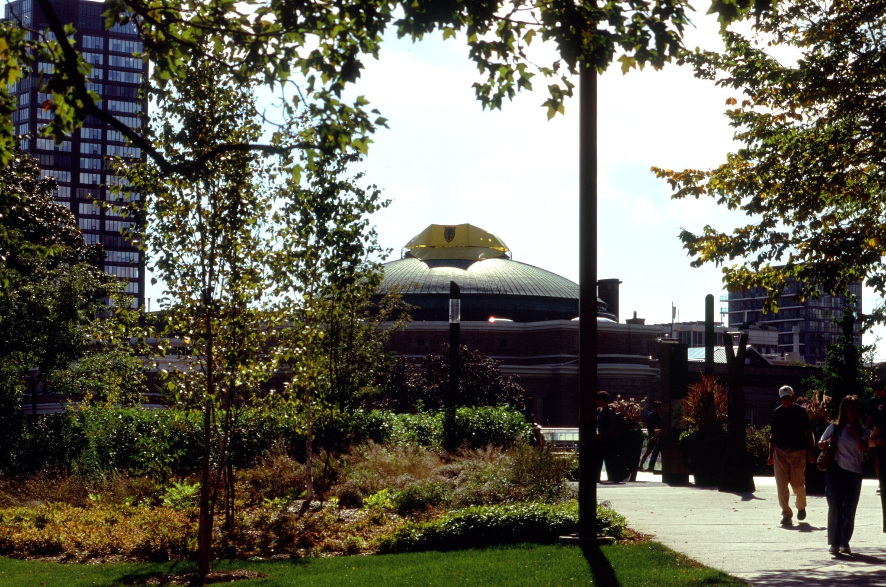

On the morning of October 6th, students walking across front campus were greeted by the sight of a yellow Frosh hard hat on top of Convocation Hall. The hard hat displayed "2T9" on the front within what appeared to be a rendition of the BFC shield, though it cannot be known for certain.
Firetrucks appeared outside of Con Hall around 10:30, and by 11:00 four firetrucks had appeared.
By noon, work crews were on the roof, and it started being dissembled around 14:30. During this time, classes inside Con Hall were canceled and caution tape was put on the doors to the lecture hall.
